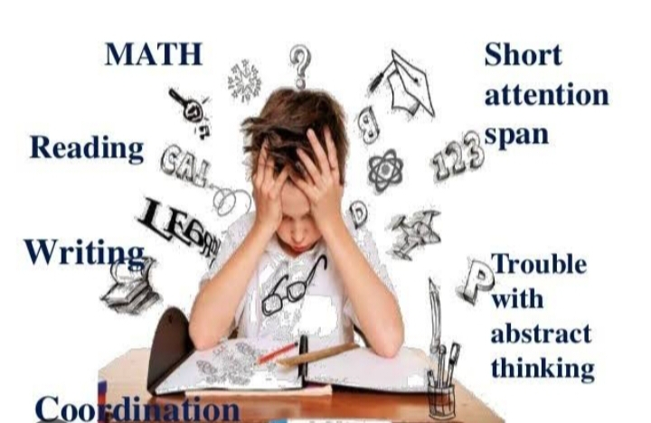

I'm Abegail and I'm Rachel We are, both senior high school students specializing in ICT. Together, we enjoy working on creative digital projects, exploring video editing, and enhancing our technical skills. Outside of our studies, Rachel loves reading books and trying new hobbies, while Abegail is passionate about arts discovering new ways to express creativity.
Me as Rachel These are my skills because they align with my interests and experiences. I enjoy expressing creativity through video editing, which also requires attention to detail and technical knowledge. Cooking is another passion of mine, as it allows me to be innovative and share something meaningful with others. My proficiency in using computers and encoding comes from both practice and necessity in today's digital world. These skills reflect my versatility and dedication to continuous learning.
Me as Abegail My skills is Playing a guitar Playing the guitar offers a lot of benefits—it's a versatile instrument, easy to carry around, and allows you to express creativity through music. Plus, it can be really fun to learn and can bring a sense of accomplishment when you master new songs or techniques
Rachel, These things are challenging for me because they require special skills, determination, and courage. Creating a website and formulas in Math is difficult because they require the right knowledge, logic, and patience Meanwhile, eating sour or spicy food is a challenge for my taste buds and endurance. Giving reports in front of the class is difficult for me because it requires confidence, clear expression, and readiness to accept others' opinions. Despite these challenges, I believe I can overcome them through continuous practice and a positive outlook."
Abegail, Being a "slow learner" generally refers to someone who takes more time than others to understand or master new concepts, skills, or tasks. It doesn't mean that the person is incapable or less intelligent; rather, it might mean they need a different pace or approach to learning compared to others. Some people may need more repetition, more detailed explanations, or different teaching methods to grasp something.
If you love playing/editing as much as l do.love playing/editing as much as l do?Let's talk about that how awesome they are!We can code while we play.